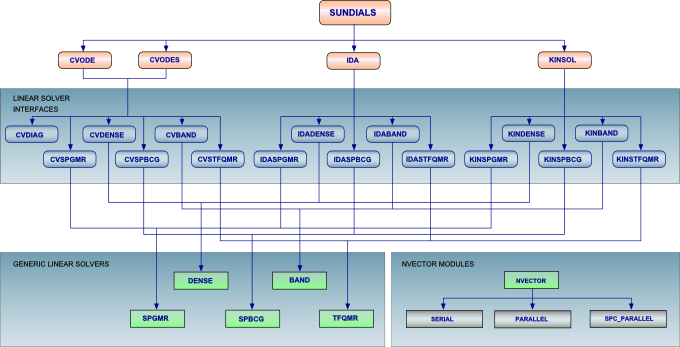
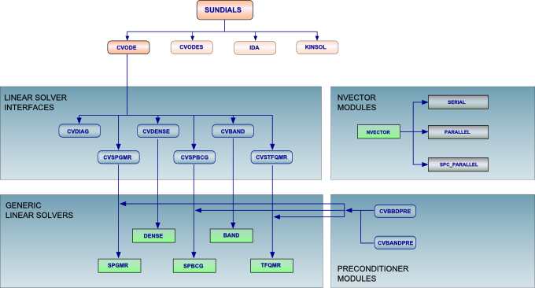
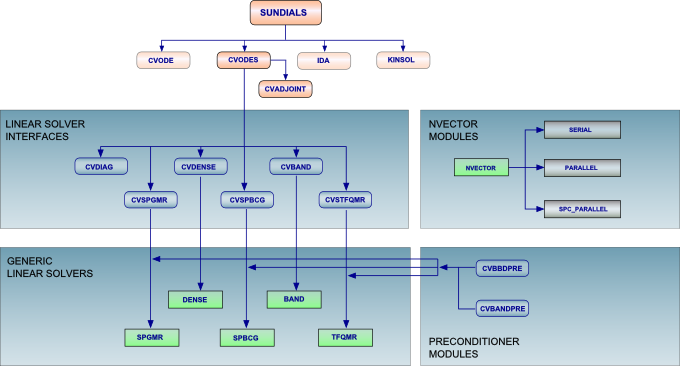
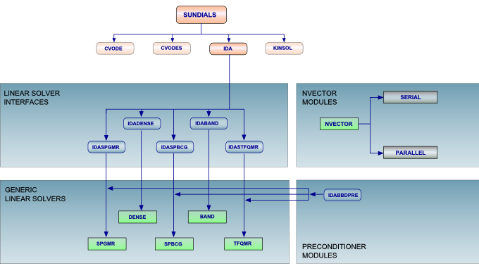
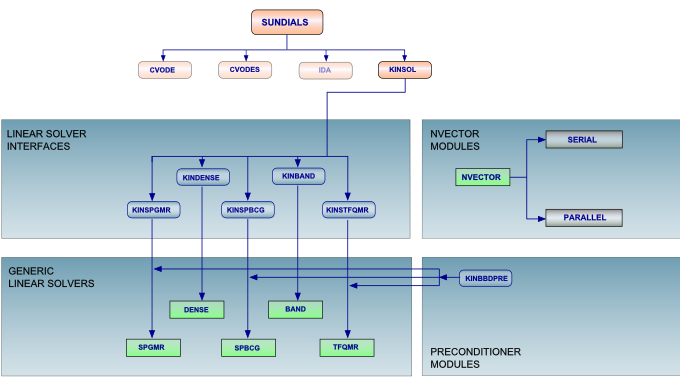

[ SUNDIALS::CVODE::CVODES::IDA::KINSOL ]
Description of SUNDIALS
SUNDIALS
was implemented with the goal
of providing robust time integrators and nonlinear solvers that
can easily be incorporated into existing simulation codes. The
primary design goals were to require minimal information from the
user, allow users to easily supply their own data structures
underneath the solvers, and allow for easy incorporation of
user-supplied linear solvers and preconditioners.
The main numerical operations performed in these codes are operations on data vectors, and the codes have been written in terms of interfaces to these vector operations. The result of this design is that users can relatively easily provide their own data structures to the solvers by telling the solver about their structures and providing the required operations on them. The codes also come with default vector structures with pre-defined operation implementations for both serial and distributed memory parallel environments in case a user prefers not to supply their own structures. In addition, all parallelism is contained within specific vector operations (norms, dot products, etc.) No other operations within the solvers require knowledge of parallelism. Thus, using a solver in parallel consists of using a parallel vector implementation, either the one provided with SUNDIALS, or the user's own parallel vector structure, underneath the solver. Hence, we do not make a distinction between parallel and serial versions of the codes.

The main numerical operations performed in these codes are operations on data vectors, and the codes have been written in terms of interfaces to these vector operations. The result of this design is that users can relatively easily provide their own data structures to the solvers by telling the solver about their structures and providing the required operations on them. The codes also come with default vector structures with pre-defined operation implementations for both serial and distributed memory parallel environments in case a user prefers not to supply their own structures. In addition, all parallelism is contained within specific vector operations (norms, dot products, etc.) No other operations within the solvers require knowledge of parallelism. Thus, using a solver in parallel consists of using a parallel vector implementation, either the one provided with SUNDIALS, or the user's own parallel vector structure, underneath the solver. Hence, we do not make a distinction between parallel and serial versions of the codes.
[ Top ]
[
SUNDIALS::CVODE::CVODES::IDA::KINSOL
]
Description of CVODE
CVODE
is a solver for stiff and nonstiff ordinary differential equation (ODE)
systems (initial value problem) given in explicit form y' = f(t,y).
The methods used in CVODE are variable-order, variable-step multistep methods. For nonstiff problems, CVODE includes the Adams-Moulton formulas, with the order varying between 1 and 12. For stiff problems, CVODE includes the Backward Differentiation Formulas (BDFs) in so-called fixed-leading coefficient form, with order varying between 1 and 5. For either choice of formula, the resulting nonlinear system is solved (approximately) at each integration step. For this, CVODE offers the choice of either functional iteration, suitable only for nonstiff systems, and various versions of Newton iteration. In the cases of a direct linear solver (dense or banded), the Newton iteration is a Modified Newton iteration, in that the Jacobian is fixed (and usually out of date). When using SPGMR as the linear solver, the iteration is an Inexact Newton iteration, using the current Jacobian (through matrix-free products), in which the linear residual is nonzero but controlled.
When used in conjunction with the serial NVECTOR module, CVODE provides both direct (dense and band) solvers and a preconditioned Krylov (iterative) solver. In the parallel version (CVODE used with a parallel NVECTOR module) only the Krylov solver is available. An approximate diagonal Jacobian option is available with both versions. For the serial version, there is a banded preconditioner module called CVBANDPRE for use with the Krylov solver, while for the parallel version there is a preconditioner module called CVBBDPRE which provides a band-block-diagonal preconditioner.
For use with Fortran applications, a set of Fortran/C interface routines, called FCVODE, is also supplied. These are written in C, but assume that the user calling program and all user-supplied routines are in Fortran.

The methods used in CVODE are variable-order, variable-step multistep methods. For nonstiff problems, CVODE includes the Adams-Moulton formulas, with the order varying between 1 and 12. For stiff problems, CVODE includes the Backward Differentiation Formulas (BDFs) in so-called fixed-leading coefficient form, with order varying between 1 and 5. For either choice of formula, the resulting nonlinear system is solved (approximately) at each integration step. For this, CVODE offers the choice of either functional iteration, suitable only for nonstiff systems, and various versions of Newton iteration. In the cases of a direct linear solver (dense or banded), the Newton iteration is a Modified Newton iteration, in that the Jacobian is fixed (and usually out of date). When using SPGMR as the linear solver, the iteration is an Inexact Newton iteration, using the current Jacobian (through matrix-free products), in which the linear residual is nonzero but controlled.
When used in conjunction with the serial NVECTOR module, CVODE provides both direct (dense and band) solvers and a preconditioned Krylov (iterative) solver. In the parallel version (CVODE used with a parallel NVECTOR module) only the Krylov solver is available. An approximate diagonal Jacobian option is available with both versions. For the serial version, there is a banded preconditioner module called CVBANDPRE for use with the Krylov solver, while for the parallel version there is a preconditioner module called CVBBDPRE which provides a band-block-diagonal preconditioner.
For use with Fortran applications, a set of Fortran/C interface routines, called FCVODE, is also supplied. These are written in C, but assume that the user calling program and all user-supplied routines are in Fortran.
[ Top ]
[
SUNDIALS::CVODE::CVODES::IDA::KINSOL
]
Description of CVODES
CVODES
is a solver for stiff and nonstiff ODE systems (initial value problem)
given in explicit form y' = f(t,y,p) with sensitivity analysis capabilities
(both forward and adjoint modes).
CVODES is a supraset of CVODE and hence all options available to CVODE (with the exception of the FCVODE interface module) are also available for CVODES. Both integration methods (Adams-Moulton and BDF) and the corresponding nonlinear iteration methods, as well as all linear solver and preconditioner modules are available for the integration of the original ODEs, the sensitivity systems, or the adjoint system.
Depending on the number of model parameters and the number of functional outputs, one of two sensitivity methods is more appropriate. The forward sensitivity analysis (FSA) method is mostly suitable when the gradients of many outputs (for example the entire solution vector) with respect to relatively few parameters are needed. In this approach, the model is differentiated with respect to each parameter in turn to yield an additional system of the same size as the original one, the result of which is the solution sensitivity. The gradient of any output function depending on the solution can then be directly obtained from these sensitivities by applying the chain rule of differentiation. The adjoint sensitivity analysis (ASA) method is more practical than the forward approach when the number of parameters is large and the gradients of only few output functionals are needed. In this approach, the solution sensitivities need not be computed explicitly. Instead, for each output functional of interest, an additional system, adjoint to the original one, is formed and solved. The solution of the adjoint system can then be used to evaluate the gradient of the output functional with respect to any set of model parameters.
The FSA module in CVODES implements a simultaneous corrector method as well as two flavors of staggered corrector methods -- for the case when sensitivity right hand sides are generated all at once or separated for each model parameter. The ASA module provides the infrastructure required for the backward integration in time of systems of differential equations dependent on the solution of the original ODEs. It employs a checkpointing scheme for efficient Hermite interpolation of forward solutions during the backward integration.

CVODES is a supraset of CVODE and hence all options available to CVODE (with the exception of the FCVODE interface module) are also available for CVODES. Both integration methods (Adams-Moulton and BDF) and the corresponding nonlinear iteration methods, as well as all linear solver and preconditioner modules are available for the integration of the original ODEs, the sensitivity systems, or the adjoint system.
Depending on the number of model parameters and the number of functional outputs, one of two sensitivity methods is more appropriate. The forward sensitivity analysis (FSA) method is mostly suitable when the gradients of many outputs (for example the entire solution vector) with respect to relatively few parameters are needed. In this approach, the model is differentiated with respect to each parameter in turn to yield an additional system of the same size as the original one, the result of which is the solution sensitivity. The gradient of any output function depending on the solution can then be directly obtained from these sensitivities by applying the chain rule of differentiation. The adjoint sensitivity analysis (ASA) method is more practical than the forward approach when the number of parameters is large and the gradients of only few output functionals are needed. In this approach, the solution sensitivities need not be computed explicitly. Instead, for each output functional of interest, an additional system, adjoint to the original one, is formed and solved. The solution of the adjoint system can then be used to evaluate the gradient of the output functional with respect to any set of model parameters.
The FSA module in CVODES implements a simultaneous corrector method as well as two flavors of staggered corrector methods -- for the case when sensitivity right hand sides are generated all at once or separated for each model parameter. The ASA module provides the infrastructure required for the backward integration in time of systems of differential equations dependent on the solution of the original ODEs. It employs a checkpointing scheme for efficient Hermite interpolation of forward solutions during the backward integration.
[ Top ]
[
SUNDIALS::CVODE::CVODES::IDA::KINSOL
]
Description of IDA
IDA
is a package for the solution of differential-algebraic equation
(DAE) systems in the form F(t,y,y')=0.
It is written in C, but derived from the package DASPK
which is written in Fortran.
The integration method in IDA is variable-order, variable-coefficient BDF, in fixed-leading-coefficient form. The method order varying between 1 and 5. The solution of the resulting nonlinear system is accomplished with some form of Newton iteration. In the cases of a direct linear solver (dense or banded), the nonlinear iteration is a Modified Newton iteration, in that the Jacobian is fixed (and usually out of date). When using SPGMR as the linear solver, the iteration is an Inexact Newton iteration, using the current Jacobian (through matrix-free products), in which the linear residual is nonzero but controlled.
With the serial version of NVECTOR, IDA provides both direct (dense and band) solvers and a preconditioned Krylov (iterative) solver. In the parallel version (IDA used with a parallel NVECTOR module) only the Krylov solver is available. In addition to the basic IDASPGMR solver, the IDA package also contains a preconditioner module called IDABBDPRE, which provides a band-block-diagonal preconditioner for use with the parallel version.

The integration method in IDA is variable-order, variable-coefficient BDF, in fixed-leading-coefficient form. The method order varying between 1 and 5. The solution of the resulting nonlinear system is accomplished with some form of Newton iteration. In the cases of a direct linear solver (dense or banded), the nonlinear iteration is a Modified Newton iteration, in that the Jacobian is fixed (and usually out of date). When using SPGMR as the linear solver, the iteration is an Inexact Newton iteration, using the current Jacobian (through matrix-free products), in which the linear residual is nonzero but controlled.
With the serial version of NVECTOR, IDA provides both direct (dense and band) solvers and a preconditioned Krylov (iterative) solver. In the parallel version (IDA used with a parallel NVECTOR module) only the Krylov solver is available. In addition to the basic IDASPGMR solver, the IDA package also contains a preconditioner module called IDABBDPRE, which provides a band-block-diagonal preconditioner for use with the parallel version.
[ Top ]
[
SUNDIALS::CVODE::CVODES::IDA::KINSOL
]
Description of KINSOL
KINSOL
is a solver for nonlinear algebraic systems based on Newton-Krylov solver technology.
It is newly rewritten in the C language, based on the previous Fortran package
NKSOL of Brown and Saad.
KINSOL employs the Inexact Newton method. As this code module is anticipated for use on large systems, at this time, only iterative methods are provided to solve the resulting linear systems. The linear iterative method currently implemented is one of the class of Krylov methods, GMRES, provided through the SPGMR module common to all SUNDIALS codes.
In addition to the basic linear solver KINSPGMR, this package also includes a module called KINBBDPRE, which provides a band-block-diagonal preconditioner for the parallel version.
For use with Fortran applications, a set of Fortran/C interface routines, called FKINSOL, is also supplied. These are written in C, but assume that the user calling program and all user-supplied routines are in Fortran.

KINSOL employs the Inexact Newton method. As this code module is anticipated for use on large systems, at this time, only iterative methods are provided to solve the resulting linear systems. The linear iterative method currently implemented is one of the class of Krylov methods, GMRES, provided through the SPGMR module common to all SUNDIALS codes.
In addition to the basic linear solver KINSPGMR, this package also includes a module called KINBBDPRE, which provides a band-block-diagonal preconditioner for the parallel version.
For use with Fortran applications, a set of Fortran/C interface routines, called FKINSOL, is also supplied. These are written in C, but assume that the user calling program and all user-supplied routines are in Fortran.